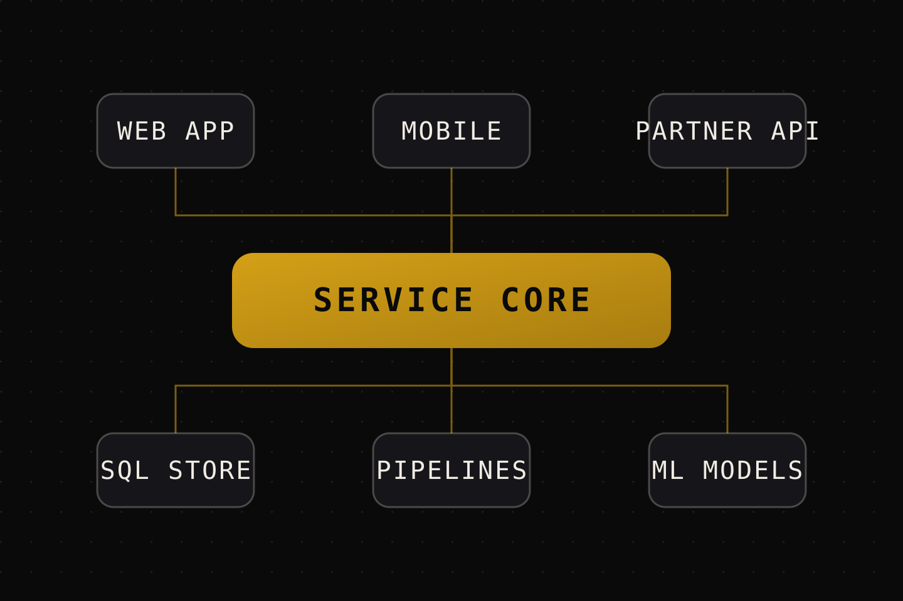

Solutions Architecture
For systems that serve more than one audience, integrate with services nobody controls, or have outgrown the shape they started in.
- System and data models
- API contracts and boundaries
- Integration and fallback planning
- Deployment and decision records